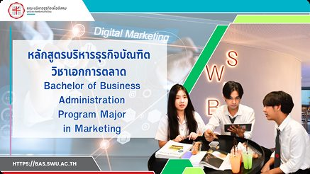
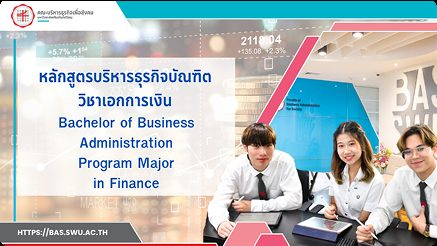
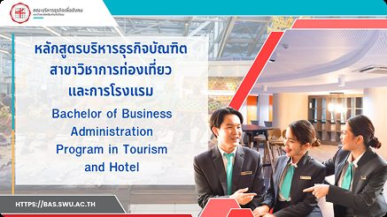
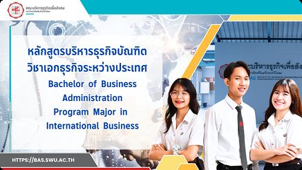
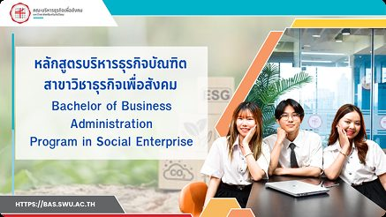
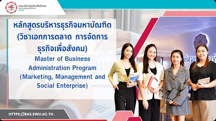
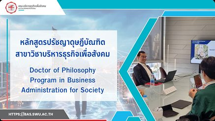

วิชาการ
หลักสูตรทั้งหมดAll Programs
9 หลักสูตรจาก 3 ภาควิชา — ทั้งหลักสูตรภาษาไทยและภาษาอังกฤษ ตั้งแต่ปริญญาตรีถึงปริญญาเอก
บัญชีบัณฑิตBachelor of Accountancy
ปูพื้นฐานการบัญชีอย่างเข้มข้น ครอบคลุมบัญชีการเงิน บัญชีบริหาร และบัญชีภาษีอากร ควบคู่กับการฝึกปฏิบัติงานสอบบัญชี

ปริญญาตรี · หลักสูตรภาษาไทยบริหารธุรกิจบัณฑิต (การตลาด)Bachelor of Business Administration -- Marketing
กลยุทธ์แบรนด์ การตลาดดิจิทัล และการเข้าใจผู้บริโภค สำหรับองค์กรที่ต้องการถูกเข้าใจ ไม่ใช่แค่ถูกมองเห็น

ปริญญาตรี · หลักสูตรภาษาไทยบริหารธุรกิจบัณฑิต (การเงิน)Bachelor of Business Administration -- Finance
การเงินธุรกิจ การวิเคราะห์การลงทุน และการธนาคาร บนพื้นฐานการปฏิบัติจริงในตลาดทุน

ปริญญาตรี · หลักสูตรภาษาไทยบริหารธุรกิจบัณฑิต (การท่องเที่ยวและการโรงแรม)Bachelor of Business Administration -- Tourism & Hotel
การจัดการงานโรงแรมและการท่องเที่ยว สำหรับเศรษฐกิจภาคบริการที่ขับเคลื่อนด้วยผู้คน

ปริญญาตรี · หลักสูตรภาษาไทยบริหารธุรกิจบัณฑิต (ธุรกิจระหว่างประเทศ)Bachelor of Business Administration -- International Business
การค้าระหว่างประเทศ การดำเนินธุรกิจระดับโลก และการบริหารข้ามวัฒนธรรม สู่เส้นทางอาชีพระดับภูมิภาคและนานาชาติ

ปริญญาตรี · หลักสูตรภาษาไทยบริหารธุรกิจบัณฑิต (ธุรกิจเพื่อสังคม)Bachelor of Business Administration -- Social Enterprise
โมเดลธุรกิจที่สร้างผลกระทบทางสังคมอย่างวัดผลได้ ผสานการเป็นผู้ประกอบการและคุณค่าต่อชุมชน
บริหารธุรกิจบัณฑิต (การจัดการธุรกิจโลก)Bachelor of Business Administration -- Global Business Management
หลักสูตรที่สอนเป็นภาษาอังกฤษทั้งหมดของ BAS SWU มีพันธมิตรแลกเปลี่ยนที่เยอรมนีและฟิลิปปินส์ พร้อมเส้นทางปริญญาคู่ 3+1

ปริญญาโท-เอก · ระดับปริญญาโท -- แขนงการตลาด การจัดการ ธุรกิจเพื่อสังคมบริหารธุรกิจมหาบัณฑิตMaster of Business Administration
หลักสูตร MBA สำหรับคนทำงาน มี 3 แขนงวิชาเลือก เน้นงานวิจัยประยุกต์และผลกระทบต่อสังคม

ปริญญาโท-เอก · ระดับปริญญาเอก -- เน้นงานวิจัยปรัชญาดุษฎีบัณฑิต สาขาบริหารธุรกิจเพื่อสังคมDoctor of Philosophy in Business Administration for Society
หลักสูตรปริญญาเอกของ BAS SWU สำหรับนักวิชาการที่ต้องการสร้างองค์ความรู้ใหม่ด้านธุรกิจที่รับผิดชอบต่อสังคม
บัณฑิตศึกษา
หลักสูตรปริญญาโทและปริญญาเอกGraduate Programmes
หลักสูตรระดับบัณฑิตศึกษาของคณะดูแลโดยศูนย์การจัดการหลักสูตรระดับบัณฑิตศึกษา ครอบคลุมปริญญาโท 3 แขนง (การตลาด · การจัดการ · ธุรกิจเพื่อสังคม) และปริญญาเอกบริหารธุรกิจเพื่อสังคม
ดูสรุปหลักสูตรบัณฑิตศึกษาในเว็บคณะ ไปเว็บไซต์หลักสูตรบัณฑิตศึกษา
เส้นทางการศึกษา
หลักสูตร 4+1Bachelor + Master (4+1)
เส้นทางเรียนต่อเนื่องปริญญาตรีควบปริญญาโท สำหรับนิสิตที่ต้องการต่อยอดสู่ระดับปริญญาโท
แนวคิดของเส้นทาง 4+1 คือให้นิสิตปริญญาตรีที่มีผลการเรียนตามเกณฑ์ ลงทะเบียนเรียนรายวิชาระดับปริญญาโทล่วงหน้าในช่วงปลายปริญญาตรี แล้วเรียนต่อจนจบปริญญาโทได้ในเวลาที่สั้นลง
- เรียนปริญญาตรีตามหลักสูตรปกติ และสะสมหน่วยกิตรายวิชาระดับบัณฑิตศึกษาตามเงื่อนไข
- สำเร็จปริญญาตรี แล้วเข้าศึกษาต่อระดับปริญญาโท
- ใช้เวลาระดับปริญญาโทสั้นลง เพราะเทียบโอนหน่วยกิตที่สะสมไว้
สอบถามเรื่องหลักสูตร
ติดต่อที่ปรึกษาหลักสูตรProgramme Advisors
ติดต่ออาจารย์ที่ปรึกษาของแต่ละหลักสูตรได้จากหน้านี้โดยตรง
ภาควิชาการตลาดและการจัดการ
หัวหน้าภาควิชา · ผู้ช่วยศาสตราจารย์ ดร.กังวาน ยอดวิศิษฎ์ศักดิ์